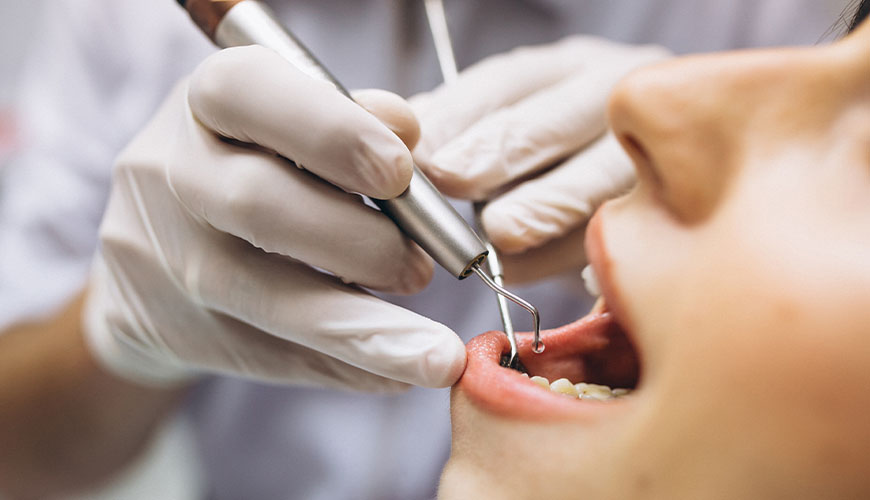
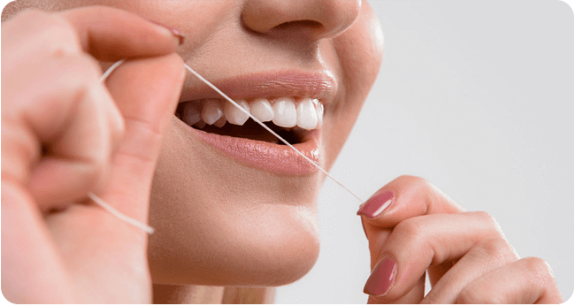
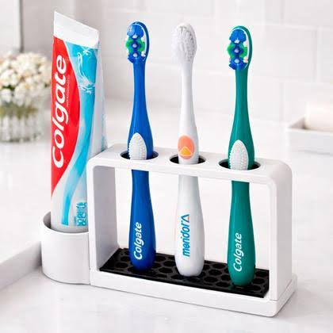
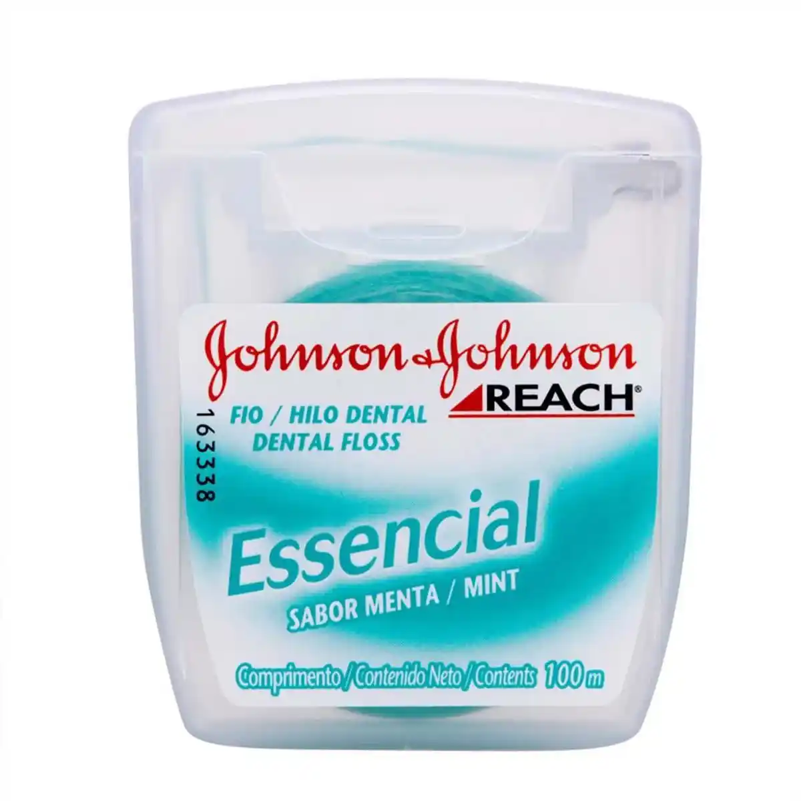
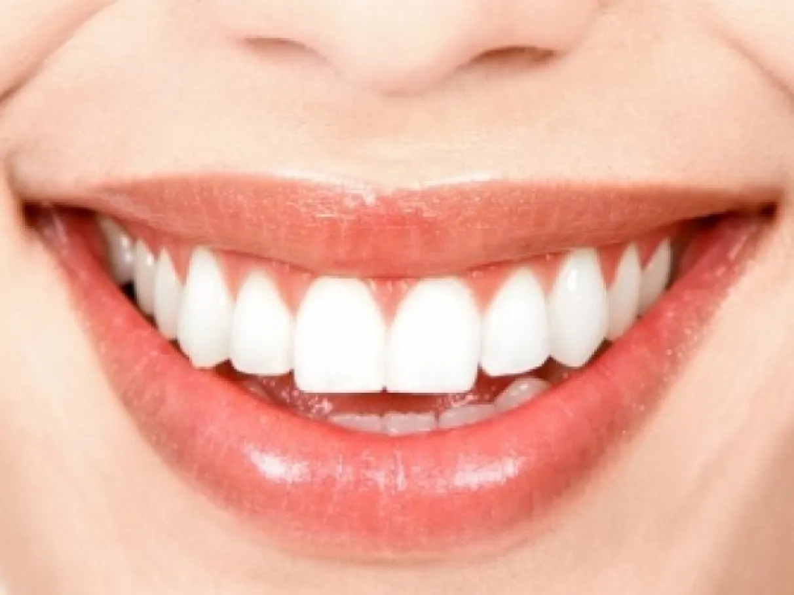

INTRODUÇÃO
A saúde bucal é muito importante para o nosso bem-estar e para a qualidade de vida. Cuidar dos dentes e da gengiva ajuda a prevenir cáries, mau hálito e outras doenças. Para manter a boca saudável, devemos escovar os dentes pelo menos três vezes ao dia, usar fio dental diariamente, ter uma alimentação equilibrada e visitar o dentista regularmente. Além de deixar o sorriso bonito, esses cuidados ajudam na mastigação, na fala e na saúde de todo o corpo.






CUIDADOS COM A SAÚDE BOCAL
Escovar os dentes pelo menos 2x ao dia usando creme dental com fluor, usar o fio dental diariamente, escovar a língua, evitar o excesso de açúcar, beba bastante água, ir ao dentista regularmente. Troque sua escova de dente a cada 3 ou 4 meses, coma de forma saudável, evite roer as unhas e mordes objetos e nunca compartilhe escova de dente.